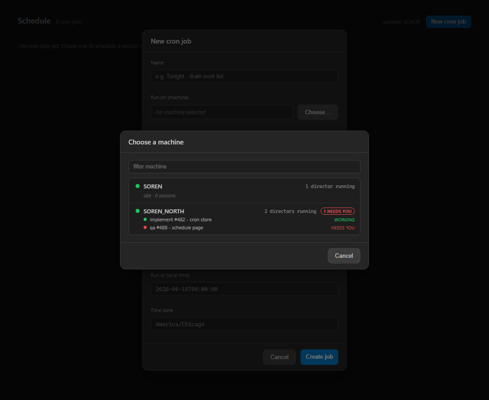

devthrottle-wt-503-qa) - own build, own tests, own live curl, own render. The Developer
report and screenshots were NOT reused.| # | Criterion | Expected | Actual (my evidence) | Verdict |
|---|---|---|---|---|
| 1 | POST /cron/jobs accepts target.machine; GET echoes it; a body pinning only a Director id is rejected (or the field is gone). |
201 + machine echoed on POST/GET; directorId-only body -> 400. | Stood up my OWN live loopback Gateway host (invoking the shipped CronJobEndpoints.Map) and curled it: POST with target.machine -> 201, target:{"machine":"SOREN_NORTH"} echoed, nextRunUtc computed; GET echoes the machine; a body with only target.directorId -> 400 {"error":"target.machine is required"} (the DirectorId field is gone from the contract). Transcript: qa-ac1-curl.txt. |
PASS |
| 2 | Picker selects a machine (one card per machine, not per Director); created job's target.machine is the chosen machine. |
One card per machine; two same-machine Directors collapse to one card; POST carries the chosen machine. | My own bUnit render of the real compiled Schedule.razor (screenshot below): field "Run on (machine)", "Choose a machine" dialog with one card per machine - SOREN_NORTH's TWO Directors collapse into a single card ("2 directors running") with a session preview + NEEDS YOU flag; SOREN shows "idle · 0 sessions". SchedulePickerTests.Selecting_a_card_persists_that_machine_name_in_the_created_job asserts the POSTed target.machine == the selected machine. Re-ran in my checkout: PASS. |
PASS |
| 3 | Reachable Director on the machine -> session starts there; run record shows the Director used. | Resolves to the running Director without launching; record carries machine + resolved Director. | RegistryDirectorTargetResolverTests.Resolve_DirectorAlreadyRunning_ReturnsItsEndpoint_DoesNotLaunch (PASS - resolves endpoint + id, launcher StartCount 0). CronRunEndpointsTests.RunNow_FiresAndRecords_WithFullRecordShape (PASS - record carries machine=target and the resolved targetDirectorId). Re-ran in my checkout: PASS. |
PASS |
| 4 | No Director -> launcher starts one, waits for register, then runs; launcher fails -> clear not-started reason. | Launch+poll resolves; launcher-fails and never-registers produce explicit errors (no crash, no fallback). | All PASS in my checkout: Resolve_NoDirector_LauncherStartsOne_RegistersAfterLaunch_Resolves, Resolve_NoDirector_LauncherCannotStart_ReturnsError, Resolve_LaunchedButNeverRegisters_ReturnsTimeoutError, Resolve_OnlyUnreachableDirectorOnMachine_LaunchesAReplacement, Resolve_EmptyMachine_ReturnsError_DoesNotLaunch. |
PASS |
| 5 | Build clean (0 warnings); cron + cockpit tests pass. | 0 warnings; cron + cockpit green. | My own dotnet build cc-director.sln -> Build succeeded, 0 Warning(s), 0 Error(s). Cockpit.Tests 63/63. Gateway.Tests 769/770 - see regression note. |
PASS |
== AC1a: POST /cron/jobs with target.machine ==
{"id":"cj_...","name":"nightly",...,"target":{"machine":"SOREN_NORTH"},...,"nextRunUtc":"2026-06-18T05:00:00Z",...}
HTTP=201
== AC1c: POST pinning only target.directorId (legacy) ==
{"error":"target.machine is required"}
HTTP=400
qa-ac1-curl.txt.
DictationEndpointTests.FullPipeline_transcribes_phase0_clip2_with_realtime_provider ("expected at least 1 partial transcript, got 0") - a Vosk real-time speech-recognition pipeline assertion that depends on the Vosk model/audio in the environment. Out of scope and pre-existing: the #503 diff touches zero dictation/Vosk files, so this is not a regression introduced by this PR.gateway container. No DT blocking-rule violation.DirectorTargetResult.Error values (no Director / launcher failed / never registered) rather than silently degrading.VERIFIED - all 5 acceptance criteria met with independent proof. Standalone QA: labeling flow:done and leaving the squash-merge of PR #505 to the human. Supersedes #495 / PR #498.